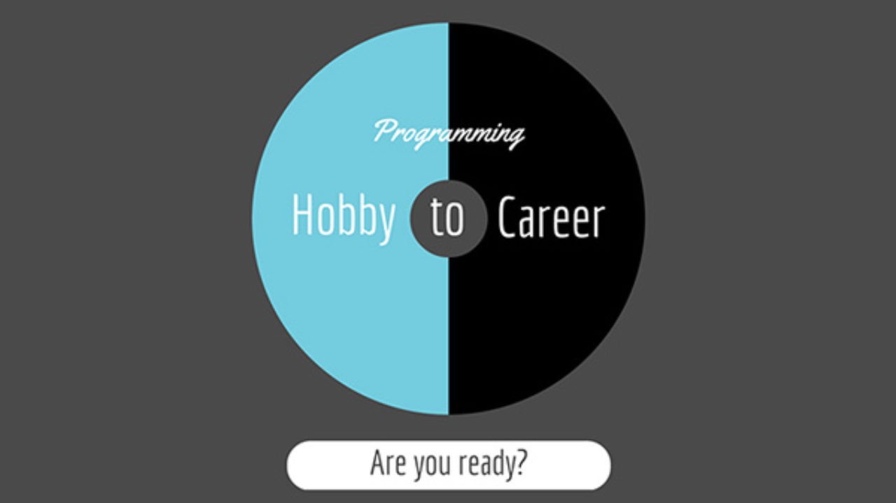
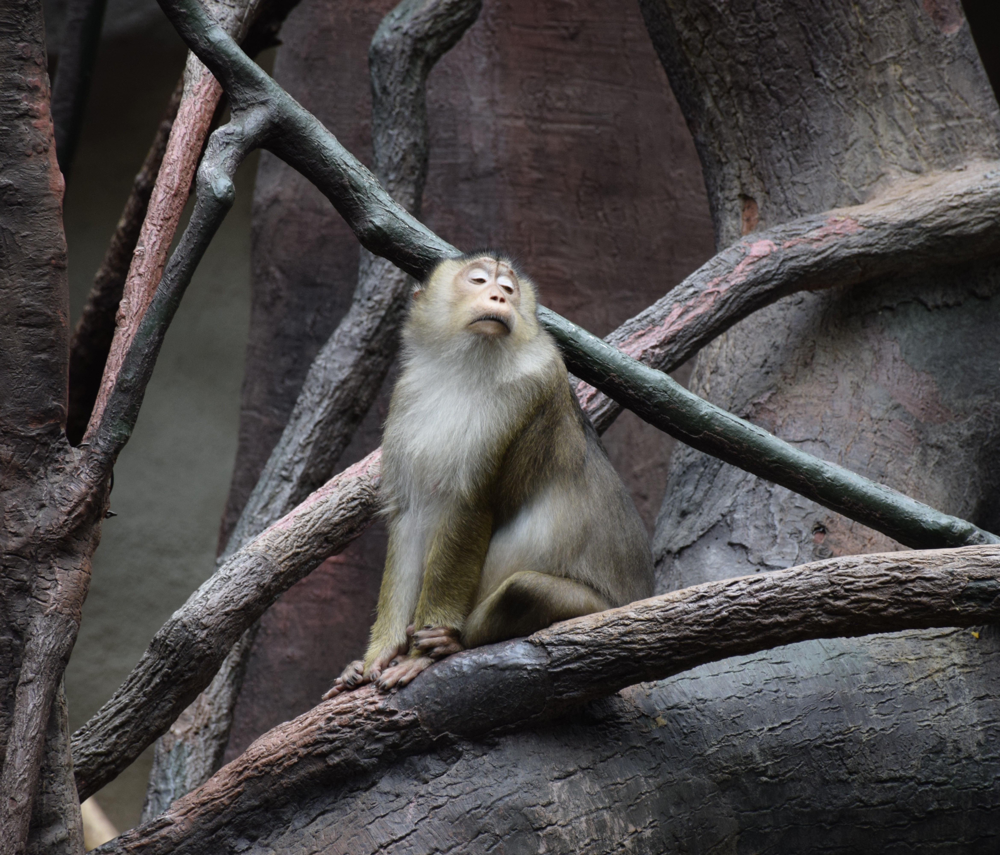
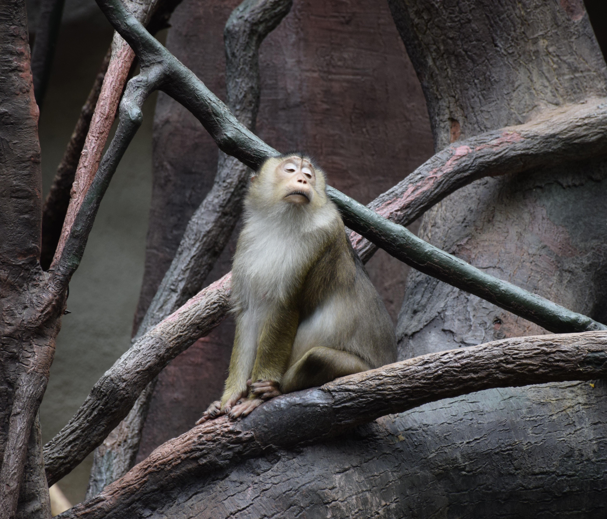

"One to make you money..."
 The first hobby I am gonna talk about is -if you haven't already guessed- CODING. Although not all people would agree to that, coding is really a hobby. It is true that, at a certain point, most of us turn this hobby into a lucrative and fulfilling career, but is this a bad thing to do? Getting paid for doing what you love is, from my point of view, a career goal that everyone should try to achieve. However, the path from point A having a passion for progamming - to point B - turning that passion into a career - is usually full of obstacles.
My passion for programming started from video games. I know that it sounds overrated, but it is kind of true. These days video games have reached an impressive level in terms of graphics, game play, mechanics etc. So a handful of players start to ask: "How are these games really made?". And when you start to google it, you run into terms like algorithms, data structures and so on. From tab to tab you simply forgot what you were searching for in the first place and realize that there are so many awesome things you can do with programming. And so you start learning...
When I first started programming, I was so overwhelmed by it all. It took some time to get used to it, but once I started to get it, it was a blast. Even when you spend hours trying to fix "that bug", you still have that feeling of acomplishment at the end of the day, because you learned so many new things while looking for a solution to your problem.
So right now I am still a student at Politehnica University in Bucharest, department of Computer Science. Below you can see a short list of the projects I worked on before and during university.
Personal Projects
- Security and Crypto:Steganography project
- Operating systems: Dockers project
- Data structures and algorithms:
- DNS server model using general trees
- Chess bot using alpha beta algorithm (compatible with XBoard)
- UI:Voucher Management application in Java
"One to keep you in shape..."
Since programming is a very static activity which involes standing lots of hours on a chair, in fornt of a screen, I think it is very important to remember to move your body from time to time. For me, the solution for that is HIKING. I really love spending time in the mountains: summit hikes, waking up early to see the sunrise, camping in the woods, eating forest fruits... These activities help me deconnect from the urban agitaion.
"One to be creative..."
The least but not the last is PHOTOGRAPHY. Although I didn't finish any photography courses yet, I really enjoy using my camera and learning about light, exposure, contrast and so on. I find this a very great hobby to practice both inside and outside, especially when it comes to travelling.
Below you can see a short gallery with my best shots
 



Comments section
Other people comments:
Choose how many comments to be displayed: